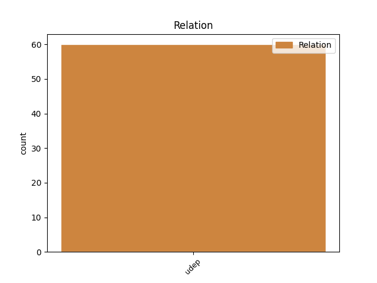
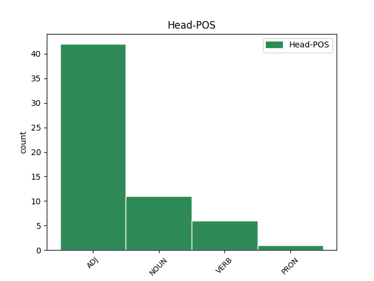
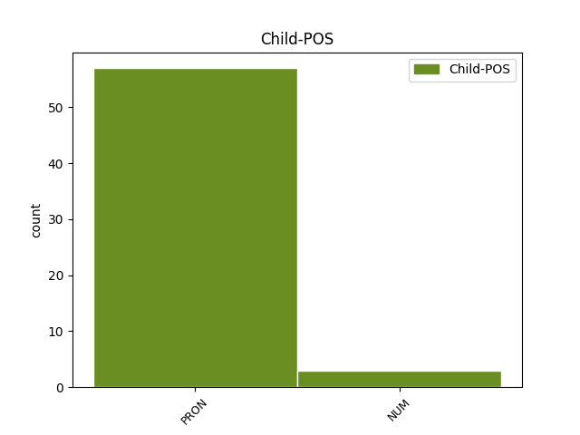

Distribution of features within this leaf



Agreement Rules sorted by frequency.
- When the dependent token is the underspecified dependency(udep) of the head token, and the dependent token is PRON.
1 unde _ _ _ _ 0 _ _ _
2 dionysius _ _ _ _ 0 _ _ _
3 dicit _ _ _ _ 0 _ _ _
4 , _ _ _ _ 0 _ _ _
5 quod _ _ _ _ 0 _ _ _
6 non _ _ _ _ 0 _ _ _
7 est _ _ _ _ 0 _ _ _
8 possibile _ _ _ _ 0 _ _ _
9 nobis _ _ _ _ 0 _ _ _
10 in _ _ _ _ 0 _ _ _
11 hac hic PRON F1|grn1|casF|gen2 Case=Abl|Degree=Pos|Gender=Fem|Number=Sing|PronType=Dem 12 udep _ _
12 vita vita NOUN A1|grn1|casF|gen2|vgr1 Case=Abl|Degree=Pos|Gender=Fem|Number=Sing 0 _ _ _
13 aliter _ _ _ _ 0 _ _ _
14 superlucere _ _ _ _ 0 _ _ _
15 divinum _ _ _ _ 0 _ _ _
16 radium _ _ _ _ 0 _ _ _
17 , _ _ _ _ 0 _ _ _
18 nisi _ _ _ _ 0 _ _ _
19 cum _ _ _ _ 0 _ _ _
20 varietate _ _ _ _ 0 _ _ _
21 sensibilium _ _ _ _ 0 _ _ _
22 formarum _ _ _ _ 0 _ _ _
23 : _ _ _ _ 0 _ _ _
1 substantiae _ _ _ _ 0 _ _ _
2 autem _ _ _ _ 0 _ _ _
3 separatae _ _ _ _ 0 _ _ _
4 natura _ _ _ _ 0 _ _ _
5 potest _ _ _ _ 0 _ _ _
6 conservari _ _ _ _ 0 _ _ _
7 in _ _ _ _ 0 _ _ _
8 uno unus NUM F1|grn1|casF|gen3 Case=Abl|Degree=Pos|Gender=Neut|Number=Sing|NumType=Card 9 udep _ _
9 individuo individuus NOUN B1|grn1|casF|gen3 Case=Abl|Degree=Pos|Gender=Neut|Number=Sing 0 _ _ _
10 : _ _ _ _ 0 _ _ _
11 eo _ _ _ _ 0 _ _ _
12 quod _ _ _ _ 0 _ _ _
13 sunt _ _ _ _ 0 _ _ _
14 incorruptibiles _ _ _ _ 0 _ _ _
15 , _ _ _ _ 0 _ _ _
16 ut _ _ _ _ 0 _ _ _
17 supra _ _ _ _ 0 _ _ _
18 ostensum _ _ _ _ 0 _ _ _
19 est _ _ _ _ 0 _ _ _
20 . _ _ _ _ 0 _ _ _
Disagree Examples:
1 ergo _ _ _ _ 0 _ _ _
2 oportet _ _ _ _ 0 _ _ _
3 quod _ _ _ _ 0 _ _ _
4 deus _ _ _ _ 0 _ _ _
5 , _ _ _ _ 0 _ _ _
6 qui _ _ _ _ 0 _ _ _
7 est _ _ _ _ 0 _ _ _
8 actus _ _ _ _ 0 _ _ _
9 purus _ _ _ _ 0 _ _ _
10 , _ _ _ _ 0 _ _ _
11 sit _ _ _ _ 0 _ _ _
12 simpliciter _ _ _ _ 0 _ _ _
13 ea is PRON F1|grn1|casF|gen2 Case=Abl|Degree=Pos|Gender=Fem|Number=Sing|PronType=Dem,Prs 14 udep _ _
14 prior prior ADJ C1|grn2|casA|gen1 Case=Nom|Degree=Cmp|Gender=Masc|Number=Sing|NumType=Ord 0 _ _ _
15 : _ _ _ _ 0 _ _ _
16 et _ _ _ _ 0 _ _ _
17 per _ _ _ _ 0 _ _ _
18 consequens _ _ _ _ 0 _ _ _
19 causa _ _ _ _ 0 _ _ _
20 ipsius _ _ _ _ 0 _ _ _
21 . _ _ _ _ 0 _ _ _
1 agens _ _ _ _ 0 _ _ _
2 autem _ _ _ _ 0 _ _ _
3 particulare _ _ _ _ 0 _ _ _
4 se _ _ _ _ 0 _ _ _
5 habet _ _ _ _ 0 _ _ _
6 ad _ _ _ _ 0 _ _ _
7 agens _ _ _ _ 0 _ _ _
8 universale _ _ _ _ 0 _ _ _
9 sicut _ _ _ _ 0 _ _ _
10 eo is PRON F1|grn1|casF|gen3 Case=Abl|Degree=Pos|Gender=Neut|Number=Sing|PronType=Dem,Prs 11 udep _ _
11 posterius posterus ADJ C1|grn2|casA|gen3 Case=Nom|Degree=Cmp|Gender=Neut|Number=Sing 0 _ _ _
12 , _ _ _ _ 0 _ _ _
13 et _ _ _ _ 0 _ _ _
14 sicut _ _ _ _ 0 _ _ _
15 eius _ _ _ _ 0 _ _ _
16 instrumentum _ _ _ _ 0 _ _ _
17 . _ _ _ _ 0 _ _ _
1 ordinatio _ _ _ _ 0 _ _ _
2 enim _ _ _ _ 0 _ _ _
3 aliquorum _ _ _ _ 0 _ _ _
4 fieri _ _ _ _ 0 _ _ _
5 non _ _ _ _ 0 _ _ _
6 potest _ _ _ _ 0 _ _ _
7 nisi _ _ _ _ 0 _ _ _
8 per _ _ _ _ 0 _ _ _
9 cognitionem _ _ _ _ 0 _ _ _
10 habitudinis _ _ _ _ 0 _ _ _
11 et _ _ _ _ 0 _ _ _
12 proportionis _ _ _ _ 0 _ _ _
13 ordinatorum _ _ _ _ 0 _ _ _
14 ad _ _ _ _ 0 _ _ _
15 invicem _ _ _ _ 0 _ _ _
16 , _ _ _ _ 0 _ _ _
17 et _ _ _ _ 0 _ _ _
18 ad _ _ _ _ 0 _ _ _
19 aliquid _ _ _ _ 0 _ _ _
20 altius altus ADJ C1|grn2|casD|gen3 Case=Acc|Degree=Cmp|Gender=Neut|Number=Sing 0 _ _ _
21 eius is PRON F1|grn1|casB|gen3|vgr2 Case=Gen|Degree=Pos|Gender=Neut|Number=Sing|PronType=Dem,Prs 20 udep _ SpaceAfter=No
22 , _ _ _ _ 0 _ _ _
23 quod _ _ _ _ 0 _ _ _
24 est _ _ _ _ 0 _ _ _
25 finis _ _ _ _ 0 _ _ _
26 eorum _ _ _ _ 0 _ _ _
27 ; _ _ _ _ 0 _ _ _
1 sicut _ _ _ _ 0 _ _ _
2 , _ _ _ _ 0 _ _ _
3 cum _ _ _ _ 0 _ _ _
4 dicimus _ _ _ _ 0 _ _ _
5 quod _ _ _ _ 0 _ _ _
6 supra _ _ _ _ 0 _ _ _
7 caelum _ _ _ _ 0 _ _ _
8 nihil _ _ _ _ 0 _ _ _
9 est _ _ _ _ 0 _ _ _
10 , _ _ _ _ 0 _ _ _
11 non _ _ _ _ 0 _ _ _
12 intelligimus _ _ _ _ 0 _ _ _
13 quod _ _ _ _ 0 _ _ _
14 aliquis _ _ _ _ 0 _ _ _
15 locus _ _ _ _ 0 _ _ _
16 sit _ _ _ _ 0 _ _ _
17 extra _ _ _ _ 0 _ _ _
18 caelum _ _ _ _ 0 _ _ _
19 qui _ _ _ _ 0 _ _ _
20 possit _ _ _ _ 0 _ _ _
21 dici _ _ _ _ 0 _ _ _
22 supra _ _ _ _ 0 _ _ _
23 respectu _ _ _ _ 0 _ _ _
24 caeli _ _ _ _ 0 _ _ _
25 , _ _ _ _ 0 _ _ _
26 sed _ _ _ _ 0 _ _ _
27 quod _ _ _ _ 0 _ _ _
28 non _ _ _ _ 0 _ _ _
29 est _ _ _ _ 0 _ _ _
30 locus _ _ _ _ 0 _ _ _
31 eo is PRON F1|grn1|casF|gen3 Case=Abl|Degree=Pos|Gender=Neut|Number=Sing|PronType=Dem,Prs 32 udep _ _
32 superior superior ADJ C1|grn2|casA|gen1 Case=Nom|Degree=Cmp|Gender=Masc|Number=Sing 0 _ _ _
33 . _ _ _ _ 0 _ _ _
1 causa _ _ _ _ 0 _ _ _
2 per _ _ _ _ 0 _ _ _
3 se _ _ _ _ 0 _ _ _
4 prior prior ADJ C1|grn2|casA|gen2 Case=Nom|Degree=Cmp|Gender=Fem|Number=Sing|NumType=Ord 0 _ _ _
5 est _ _ _ _ 0 _ _ _
6 ea is PRON F1|grn1|casF|gen2 Case=Abl|Degree=Pos|Gender=Fem|Number=Sing|PronType=Dem,Prs 4 udep _ _
7 quae _ _ _ _ 0 _ _ _
8 est _ _ _ _ 0 _ _ _
9 per _ _ _ _ 0 _ _ _
10 accidens _ _ _ _ 0 _ _ _
11 . _ _ _ _ 0 _ _ _